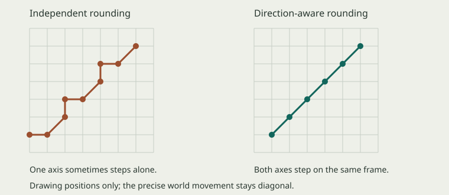

The Descent · lesson 01 · explore at your own pace
Where a coordinate lives
Follow a viewing window across a room. Keep the equations symbolic.
Use a frame, a ruler, and a mosaic
Sliding a picture frame across a still painting changes what appears inside the frame. It does not move the objects painted on the canvas. That is the relationship between camera movement, screen positions, and world positions.
A logical distance can be fractional. Picture a point resting inside a grid cell, rather than on its boundary. The point has a fractional position; the cell is still whole. Our term logical pixel names the ruler’s unit, while native raster pixel names a cell of the rendered image.
Image grids also have coordinates: source_x selects content within the artwork. Destination x places the sprite for drawing. Neither field should be interpreted without identifying its frame and destination.
Raster describes how an image is represented
A raster represents an image as a rectangular grid of pixel samples. A vector description specifies shapes and paths. Rasterization produces samples on a chosen grid from drawing geometry.
The grid is what defines a raster. It might come from a photo, a sprite image, or vector drawing commands, and it can exist only in a render target’s memory. The source description and the rendered output can use different representations.
Sources: project vocabulary, Sprite source and destination rectangles, W3C PNG image model, and W3C SVG introduction.
Move the viewing window
Hold the actor still and move only the camera. Track the actor first against the room, then against the viewing window. The controls do the arithmetic; watch which relationship changes.
The actor is near the middle of the viewing window. Its drawing edge is adjusted to a native grid boundary.
Inspect the drawing edge
Enlargement changes the display mapping. It does not add detail to the source artwork or change the actor’s place in the room. Keep the camera and actor controls fixed while exploring this part.
The algebra behind the window
screen_left = world_left − camera_center + viewport_midpoint
world_left = screen_left + camera_center − viewport_midpoint
draw_left = align(screen_left)Subtract the camera center to express a point relative to the camera. Add the viewport midpoint to locate it inside the window. align names our nearest-grid-boundary operation on the final artwork edge; it is a teaching name for the policy, not a new SDK function.
Sources: Camera#for_drawing(snap: false), Render.direct_actor, the fixed canvas configuration, and SDL logical presentation. The diagrams illustrate geometry; they do not emulate the game’s sampler.
Read the pipeline as a sequence of meanings
- World position. RoomPreview interpolates the actor’s position in the room.
- Camera conversion. Camera expresses that position relative to a drawing destination. Check whether the caller supplies the fractional presentation snapshot or the aligned scenery snapshot.
- Final artwork alignment. Render.direct_actor aligns the rectangle’s final screen-space bounds.
- Presentation. The finished native image is enlarged and positioned on the display.
Our term draw space describes coordinates prepared for their destination. Scenery uses paired camera pixel steps inside 320 × 180 targets presented at (0, 0). Direct actors align at their final screen destination. Both policies use logical units.
Conversion changes the reference origin. Alignment chooses a drawing boundary. A reversible translation preserves the original position; alignment can discard a fractional difference.
For anchored artwork, first move from the anchor to the left edge, align the edge, then restore the anchor offset. A correctly aligned rectangle can have its center between grid boundaries.
Primary reading: Camera#to_screen_space alongside the installed camera-space/world-space sample. The default camera path can still use a snapped offset; the fractional formula above describes the presentation snapshot. See Grid and the transform overview for supporting references.
Keep sharpness separate from movement cadence
A straight diagonal world path can become a small staircase when X and Y round on different frames. Each frame can be perfectly sharp while the sequence still wobbles. Our current camera pairs those drawing steps; the player’s precise world position is preserved.

The preview camera follows the player at room edges, keeping the player centered. CameraScroll handles scenery stepping separately. Source-art resizing is another stage: nearest presentation keeps the scene sharp, while filtered downsizing keeps small candle and pedestal details stable.
Read the motion explanation, sampling comparison, and current decision. The slider diagrams above isolate precise camera conversion and final actor alignment; they do not simulate the scenery’s movement history or its sampler.
Practice through explanation, pictures, and algebra
Choose one round at a time. Each question asks for a relationship, a prediction, or a symbolic transformation. No arithmetic entry is required. Feedback stays in this browser session and is not sent anywhere.
Basic · establish the distinctions
Use the frame, ruler, and mosaic descriptions.
Pixels & raster · identify what belongs where
Name the unit or image grid without trying to calculate a pixel count.
Application · predict the visible result
Picture the change first. Then explain what stayed fixed.
Advanced · reason about the transformations
Keep the variables symbolic. Trace their meaning through the drawing stages; no decimal substitution is needed. The symbolic reference pairs each relationship with a verbal explanation.